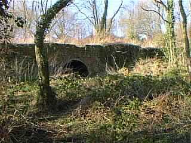
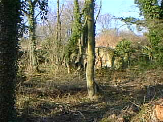

On Hinkshay Road, just before the White Hart football field, there is a track to the right which goes down hill, curving left until it is roughly parallel with the road as it passes the top of Hinkshay Pools. It crosses the line of the former incline which linked Old Wharf, Malinslee, with the canal (see here for more about that), and on the corner is a disused brick building. It continues for another hundred yards or so, ending at a point on the Silkin Way just above where it leaves the line of the old railway. In the woods beyond that is clear evidence that there was a fairly extensive works here, whilst three brick arches and the start of a tunnel can be seen above the path to the left, shown here:
|  |  |
So what was all this then? The tunnel is the most interesting, yet most perplexing feature. It heads horizontally into the hillside, but is blocked after about 75 yards. It is brick-built, and unusually, seems to have been brick-floored. It was not part of the canal, being too high up, and seems too small to have been part of any railway system. The ground rises behind the entrance for some distance and assuming it was approximately straight and level, it would have had to be around 1.5 miles long in order to emerge near Hollinswood. Such a tunnel would be world-famous!
Sue Powell kindly emailed me that
The arches ... were part of the Hinkshay Forge. The tunnel was, I think, used for the transport of iron goods via a plateway. I spent a lot of time as a child at Hinkshay, in the houses above (literally) the arches. My Nan lived there, as did her parents before, and their parents. My ancestors first came to the Hinkshay Rows circa 1860. My great-grandfather, his father and a number of his male siblings worked there.
However, this does not explain the brick floor or the destination of such a tunnel. Canals were not floored with brick, which is porous, but with "puddle" - clay kneaded with water to the consistency of putty. Neither were railways or trackways, which ran on wooden supports, or later, transverse sleepers. Why the brick?
Ian Thomas sent another explanation:
I have recently found an excellent web site (http://www.old-maps.co.uk/) which I am sure will help you a great deal.The old map which covers the Hinkshay area clearly shows a large ironworks filling the area between the tunnels you mention & the railway (Silkin way). The tunnels may be limekilns associated with the ironworks.
Opposite where the track mentioned above starts, is a mine spoil heap. There is another east of it. Was this ironworks connected with the mine? The brick building might be the works lodge (it looks very like one, dating from the middle of the 20th century).
"Gordon" recently (March 2002) sent an explanation which goes a long way to reconciling these versions:
The [tunnel] you refer to as blocked up about 75 yards along (I presume) is the one that runs undeneath the old Ever Ready factory. It now has an iron gate over it to stop any one going in it.
I have been told that the blockage you refer to was waste dumped there conveniently by workers at the Ever Ready, as there was a drain or manhole leading upwards from the tunnel to the factory.
These tunnels were mapped some years ago by the Shropshire cave rescue team but are now too dangerous to venture into, hence the reason they are blocked up.
Apparently they were tunnels dug for the movement of coal by rail out of the mines and they went all the way under Dawley to roughly where Matlock Ave is now, which could explain the big pit mound adjacent to the now demolished Telford Rd flats.
The alignment of what he suggests works well, but the snag is, that Matlock Avenue is at a considerably higher level than the mouth of the tunnel. There is, in fact, a track which I believe to be an old tramway or railway from the gate of the Hinkshay Colliery to the primary school at the end of Matlock Avenue, which climbs steadily all the way.
It always bothered me that there was a tunnel to nowhere; and its being used as a waste dump by Ever Ready makes good logistical sense (if environmentally worrying!), and might even explain the brick floor - firm footing for workers and porter's trucks. It would not have been remarkably long if it were an adit bringing coal out horizontally to a convenient place for the railway near Hinkshay; and/or waste from Hinkshay could have been carried in and lifted up a shaft to the pit mound at Matlock Avenue. It could even have been, as Sue Powell suggests, a route out for iron goods, if a shaft at Old Wharf were used to raise them to the higher level.
Yet more, very detailed, information came from Keith Oakley (Jan 2003):
My father, George Oakley, was born in Hinkshay in 1921. His grandfather was an Iron Puddler in the Ironworks we knew as the Hinkshay Forge. His mother was one of the last to leave Hinkshay when it was demolished around 1970 (we need to check exact date). She lived at 9 Single Row from around 1920.
Hinkshay was built for the workers at the Forge Ironworks. The Single Row and Double Row (back to back houses) were for the workers, the New Row (known as Ladies Row) for the management and office workers. New Row houses were larger and had cellars.
My father remembers the forge as derelict when he was a child in the 1920s. He remembers two tunnels but doesn't know what purpose they served. He remembers the east tunnel (E) as having a dirt floor and the west (W) as brick floored. He doesn't remember either being very long. He remembers the east tunnel being used by illegal card gamblers between the wars and as an air raid shelter in WW2. It was about 50 yards away from the family home at 9 Single Row.
I've blown up a section of the 1889 map. It appears to show what might be two short tunnels (I've marked them in yellow) passing under the New Row houses to what might be vertical shafts in the field behind the houses. The field served as the village football and cricket pitch until the Ever Ready (battery) factory was built on it (I believe in the early 1960s - I can remember football there in the 50s). The backs of the New Row houses were directly onto the field. The fronts of the houses led directly onto the dirt road and the gardens were across the road. He remembers the tunnels emerging below the brick boundary wall at the ends of the gardens. Like most of Hinkshay, New Row houses had brick 'privies' (toilets) half way down the garden which may be some of the blobs shown on the map. However my father can't remember any evidence of any shafts in the football field.
Bill Pearson sent another interesting idea (Nov 2007):
Richard, I've recently been rummaging through the past copies of Wellington News, deposited in the Wellington Library, and I came across an article page 16 of May 2003, which was written by a Ken Oakley, most likely the brother of Keith Oakley who contributed to your request for information, as the address, 9 Single Row, is the same. He stated that he ' used to explore the chimney air tunnels around the forge, but they were blocked off after a short distance'. So maybe that is what they are - chimney air tunnels. Another interesting article which I found was in the Shropshire Magazine, page 24 of the Jan.1966 issue, concerning Beriah Botfield II's wranglings with the Cheneys over renewal of leases, the last para. on this page states: 'Botfield complained that the Old Park Iron Co. had knowingly mined ironstone under his Stirchley Iron-works, and in doing so they had done considerable damage to the tunnel by which he conveyed cinder from his ironworks to his tip at Hinkshay furnaces.' Neither of these articles may have anything to do with the tunnels you can see, but it's a possibility!.
Here's a link to an exploration of the tunnel by "Ybsirf" and others:
http://www.28dayslater.co.uk/forums/showthread.php?t=12775
Any more ideas? Please email me!
{kind=link}